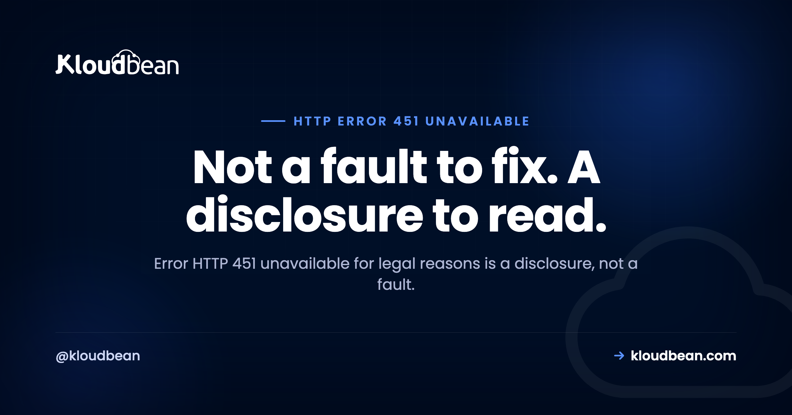

451 Unavailable For Legal Reasons: Who Blocked It, and Why

Most status codes tell you something broke. 451 unavailable for legal reasons tells you something worked exactly as designed, and you're not going to like it. Someone in the path between you and a resource received a legal demand and is complying with it. There's usually nothing to fix, no configuration to change, and no retry that helps. What there is, if whoever implemented the block followed the specification, is information about who did it and under what law.
It means access is being denied as a consequence of a legal demand, per RFC 7725. Two things surprise people. First, the blocker is often not the website: the spec explicitly says the responding server might not be the origin, and names ISPs and search engines as most affected. Second, a correct 451 should tell you who blocked it, in a Link header with rel="blocked-by", and should explain the demand in the response body. If you're a visitor, there's nothing to fix. If you run the site and didn't set this, check what sits in front of it.
451 is a transparency mechanism, not an error
This is the reframe that makes the rest make sense, and it's the stated purpose of the code rather than my interpretation. RFC 7725 introduces 451 so that legal interventions affecting how a server operates are made explicit instead of quietly hidden behind something vaguer. Its introduction cites the IETF's own work on Internet transparency and the principle that restrictions ought to be stated openly.
So the code's job is disclosure. It exists to convert an invisible removal into a visible one. That's why every competing guide framing it as a thing to troubleshoot is starting from the wrong place: if you're seeing a genuine 451, the system is being unusually honest with you.
Worth knowing that 451 lives in its own standalone RFC, published in 2016, rather than sitting alongside the other 4xx codes in the main HTTP semantics document. And yes, the number is deliberate. The acknowledgements thank Ray Bradbury, so the Fahrenheit 451 reference is confirmed by the document itself rather than being internet folklore.
403 or 451? The line is about who is refusing, and why
These get conflated constantly, and the spec's own acknowledgements record why the split exists: 403 was judged unsuitable for the legal case, so a new code was created.
| 403 Forbidden | 451 Unavailable For Legal Reasons | |
|---|---|---|
| The refusal is about | You, or your credentials, or the file's permissions | A legal demand affecting a class of people or resources |
| Who decided | The server operator, on their own terms | A court, regulator, or authority, and the operator is complying |
| Fixable by you | Often yes: permissions, credentials, a deny rule | No. Not a configuration problem |
| Does the resource exist? | Usually implied yes | Deliberately unstated by the spec |
That last row is a real subtlety. RFC 7725 says using 451 implies neither the existence nor the nonexistence of the resource. Lift the legal demand and the request still might not succeed, because the code says nothing about whether there was ever anything there. If you're troubleshooting an ordinary permission refusal instead, 403 Forbidden has the causes ranked by how often each is the answer.
The site is often not the one blocking you
This is the most practically useful thing on the page. RFC 7725 states plainly that the server returning 451 might not be an origin server, and that this type of legal demand most directly affects the operations of ISPs and search engines. Blocking can be implemented anywhere in the path.
So if you hit a 451, the site may be entirely willing to serve you. Something between you and it decided otherwise. Reading the response tells you which, and there's a header designed for exactly that question.
The blocked-by header names who is doing it
When an entity blocks access and returns 451, RFC 7725 says it should include a Link header identifying itself, and that header must carry rel="blocked-by". The relation is registered formally, not improvised.
The precision matters and it's easy to miss: the header identifies the entity actually implementing the block, not any other entity mandating it. An ISP complying with an order names the ISP, not the court. The spec puts discussion of the policy itself in the response body, and keeps the header for the mechanical fact of who is doing the blocking.
Look for it directly rather than reading the rendered page, because the body may be styled into something unhelpful while the headers are precise:
curl -sSI https://example.com/resource | grep -iE 'HTTP/|^link:'
# HTTP/2 451
# link: <https://isp.example.net/legal>; rel="blocked-by"If there's no blocked-by header, whoever returned the code skipped the part of the spec that makes it useful. That's common, and it's worth knowing that the omission is a shortfall rather than normal.
What a correct 451 Unavailable For Legal Reasons response looks like
The spec asks for an explanation in the response body covering three specific things: the party making the demand, the applicable legislation or regulation, and what classes of person and resource it applies to. Not a vague apology.
HTTP/1.1 451 Unavailable For Legal Reasons
Link: <https://example-isp.net/legal-notices/2026-14>; rel="blocked-by"
Content-Type: text/html
Cache-Control: no-store
<h1>Unavailable For Legal Reasons</h1>
<p>This resource is not available to requests originating in
[jurisdiction], following an order issued by [authority]
under [named legislation]. It applies to [class of resource].</p>Note the Cache-Control line, which the spec does not require and which you probably want anyway. That brings us to the trap.
The caching trap nobody mentions
A 451 response is cacheable by default. That's in RFC 7725, and it has consequences most operators never consider until they bite.
If a legal restriction is lifted, or if it only ever applied to a subset of requests, a cached 451 can keep serving long after the reason has gone. Worse, an intermediary cache can hold a 451 for a resource that should be available to a different class of requester, since caches key on the URL rather than on the jurisdictional facts that produced the decision.
If you implement a 451, set explicit cache directives rather than inheriting the default. And if you're investigating one that seems wrong, request it in a way that bypasses caches before concluding the block is still in force.
The absence of a 451 proves nothing
The spec's security considerations say something unusually candid for a standards document: clients cannot rely upon the use of 451, because some legal authorities may wish to avoid transparency and demand not only that access be restricted but that the demand itself not be disclosed.
Read that carefully. A 404 or a 403 in place of a 451 may be exactly what it appears to be, or it may be a restriction that came with a non-disclosure requirement attached. The specification is telling you, in its own text, that its transparency mechanism is optional in practice and that its silence carries no information. Any article confidently telling you that a missing 451 means there's no legal block is overreaching.
The spec also notes, neutrally, that clients can often still reach a blocked resource using technical countermeasures such as a VPN or Tor. That's a statement about how network-level blocking behaves, not a recommendation, and whether using one is lawful where you are is not a question a status code can answer.
If you operate the service
Work out whether you actually implemented this. If a 451 is appearing on your site and nobody on your team configured one, look at what sits in front of the origin. A CDN, a WAF, a managed DNS provider, or an upstream network may be returning it. The blocked-by header, if present, tells you immediately.
Reach for 451 only for genuine legal demands. Using it for terms-of-service enforcement, licensing restrictions you chose commercially, or ordinary geo-fencing dilutes a code whose entire value is that it means one specific thing. If you're restricting by region because of a content deal rather than a legal order, 403 is the honest answer. There's a real cost to blurring this: the code only carries information because it's used precisely.
Say who and under what law. A 451 with an empty body is compliant with the letter of the code and useless. The three facts the spec asks for cost you a paragraph and turn a dead end into something a reader can act on or challenge.
Decide where the block lives. Application-level restrictions are easy to reason about but only cover traffic that reaches your app. Edge-level rules stop it earlier and cost less, at the price of being another place your logic lives. Neither is automatically right, and the choice is easier once you know whether the demand covers a region, a set of resources, or a class of requester.
Where hosting fits, honestly
No hosting platform can resolve a legal demand, and choosing to return a 451 is a decision for your lawyers rather than your infrastructure team. Nothing on this page is legal advice, and any host implying it can make a legal obstacle go away is selling.
What infrastructure genuinely decides is the question underneath: which laws reach your data in the first place. That's a region choice, made once, with consequences that are hard to unwind. Kloudbean runs across seven cloud providers with a choice of regions, so where a workload and its data live is something you pick deliberately rather than inherit. If a restriction has to be implemented on your side, IP access control with allow and deny rules by address or CIDR is available at the platform layer, and Cloudflare is available as a paid add-on, included on Enterprise, where country-level rules sit naturally.
The boundary is the usual one, and it's wider than normal here. Managed covers the server, the stack, TLS, backups, and patching. Your legal obligations, your response to a demand, and the wording of what you return stay entirely yours. If the region question is the one you're actually working on, data residency explained is the better starting point than any status code.
Related reading
Its most-confused neighbour is 403 Forbidden, which covers ordinary permission refusals. When a resource is deliberately and permanently gone rather than legally restricted, 410 Gone is the honest code. On authentication rather than authorisation, 401 Unauthorized, and for rate limiting, 429 Too Many Requests. For the decision that actually matters here, data residency explained and GDPR compliant hosting, with the shared-responsibility picture in secure and compliant hosting. And on response headers generally, the security headers guide.
Choose the jurisdiction before it chooses you.
Managed servers across seven cloud providers with a choice of regions, so where your workload and its data live is a decision you make deliberately. IP access control by address or CIDR, Cloudflare available as an add-on, free SSL issued and renewed, and free migration assistance. Start at kloudbean.com or see pricing.
Seven providers · Region choice · IP access control · Free SSL · One dashboard
FAQ
What does error HTTP 451 mean?
It means access to the resource is being denied as a consequence of a legal demand, as defined in RFC 7725. It is not a malfunction. The code exists specifically so that legal restrictions on server operation are visible rather than hidden behind a vaguer error, which is why it is better understood as a disclosure than as a fault.
Is 451 the website's fault?
Often not. The spec states that the server returning 451 might not be an origin server, and names ISPs and search engines as the operations most directly affected by this kind of demand. A DNS resolver, a network filter, or a CDN can all return it, in which case the site itself may be perfectly willing to serve you.
What is the difference between 403 and 451?
A 403 is the operator refusing on their own terms, usually about your credentials or the resource's permissions, and it is often something you can fix. A 451 is compliance with an external legal demand affecting a class of people or resources, and no configuration change on your side resolves it. The spec's acknowledgements record that 403 was judged unsuitable for the legal case, which is why 451 was created.
How do I find out who blocked the resource?
Check the response headers for a Link header carrying the blocked-by relation, which the spec says a blocking entity should include to identify itself. Request the headers directly with curl rather than reading the rendered page. Note that the header names the entity implementing the block, not the authority that ordered it.
Can I fix a 451 error?
As a visitor, no. There is no retry, cache clear, or setting change that resolves a legal restriction, and treating it as a technical fault wastes time. If you operate the service and did not configure it, the useful step is identifying what sits in front of your origin, because a CDN, WAF, or upstream network may be returning it.
Why is 451 not in the main HTTP specification?
It was published as its own standards-track document, RFC 7725, in February 2016, rather than being folded in alongside the other 4xx codes. The number is a deliberate reference to Fahrenheit 451, which is confirmed by the document itself: the acknowledgements thank Ray Bradbury.
Does a missing 451 mean there is no legal block?
No, and the spec says so directly in its security considerations. Clients cannot rely on 451 being used, because some authorities may demand both that access be restricted and that the demand not be disclosed. So a 404 or 403 in its place carries no information either way about whether a legal restriction exists.
Should I use 451 for geo-restricted content?
Only if an actual legal demand drives the restriction. Using it for licensing deals, terms-of-service enforcement, or commercial geo-fencing dilutes a code whose whole value is meaning one specific thing. If you are restricting by region because of a content agreement rather than a legal order, 403 is the more honest answer.